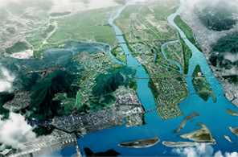

항만 물류산업
- Home
- 전략산업
- 항만 물류산업
개요
부산은 세계와 미래를 잇는 동북아 시대의 해양수도이자 국제질서를 창조할 주체도시를 목표로 세계적인 항만과 최첨단 물류단지를 중심으로 하는 항만물류인프라 조성에 주력하고 있습니다.
-

국제산업물류도시 조성
-
 가덕도 신공항
가덕도 신공항 -
 부산신항
부산신항
육성산업
부산신항 글로벌경쟁력 강화
부산항 신항 건설
- 2020년까지 강서구 가덕도 일원에 컨테이너 부두 45선석 규모 건설
- 신항 항로 중심 준설 및 토도 제거('10년~'17년)
- 유류중계기지 및 대형수리조선소를 포함한 부산신항 배후물류단지 조성('95년~'20년)
- One-stop 공동 물류센터 조성
- 24시간 운영 가능한 국가 제 2관문 신공항을 가덕도에 건설
부산신항 배후 국제산업물류도시 조성
세계적인 첨단산업물류단지 조성
- 강서지역 33㎢에 2020년까지 국제복합물류, 첨단산업단지, R&D단지 건설
- 지방산업단지, 에코델타시티 친수구역, 연구개발특구, 항공클러스터, 일반산업단지를 단계별 육성
유라시아의 관문 북항재개발
부산항 북항 재개발
- 부산항 연안부두부터 제4부두 일원 153만㎢을 2020년까지 복합도시기능을 갖춘 세계적인 미항으로 재창조
- 항만, 레저, 상업시설 겸비한 해양 관광∙비즈니스 거점 육성
- 부산역 일원 철도시설 재배치('13년~'23년)
- 해양경제특별구역 시범 지구로 지정, 연관산업간 융복합 유도
해양 창조경제 실현
해양수산 공공기관 혁신 클러스터 조성
- 동심혁신지구에 공공기관 및 관련기관 이전으로 해양수산관련 기관 집적화
- 북극연구센터 등 극지진출 기반조성 및 네트워크 구축
- 해양바이오산업단지와 해양슈퍼컴퓨팅전문센터 설립으로 해양 창조산업 R&D 육성기반 구축
글로벌 수산식품 클러스터 구축
관광자원과 연계하여 세계적인 해양수산복합공간 조성
- 부산공동어시장 현대화('15년~'18년)
- 자갈치 글로벌 수산명소화('13년~'18년)
- 수산식품산업 클러스터(Sea Food Valley) Head Tower 조성('15년~'20년)
- 농림축산검역검사본부 영남지역본부 검역계류장 이전('10년~'16년)